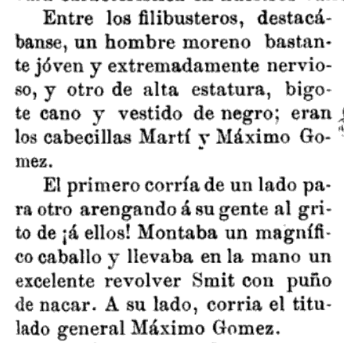

Los Hilos de Monik
Caída en combate de José Martí
Publicado el 19 de mayo de 2021 - 23 tweets - Hilo original en Twitter
1
19 de mayo ... Todos los cubanos conocen esta fecha. Hoy se cumplen 126 años de la caída en combate de José Martí, el Apóstol.
Pero ¿sabías que hay más de una versión de lo que sucedió en el momento en que murió? ¿Y lo que pasó con su cuerpo hasta el entierro?
Pues te cuento
2
"Yo evoqué la guerra: mi responsabilidad comienza con ella, en vez de acabar. Para mí la patria no será nunca triunfo, sino agonía y deber”
Casi 2 meses después del alzamiento, Martí desembarcó en Playitas de Cajobabo el 11 de abril de 1895
3
Antes de embarcarse, Martí anticipó que podría morir. Desde Montecristi, instruyó a Gonzalo de Quesada y Benjamín Guerra cómo ordenar los tomos de su obra: I y II norteamericanas, III hispanoamericanas, IV escenas norteamericanas, V Américas, y VI Letras, Educación y Pintura.
4
Pues bien, ¿qué hacía Martí en Dos Ríos el 19 de mayo?
Tras su desembarco, Marti y Gómez primero se encontraron con José Maceo en Guantánamo. Luego partieron camino a Santiago de Cuba, para ver a Antonio Maceo (el 5 de mayo tuvo lugar el famoso encuentro en La Mejorana).
5
El 15 de mayo acamparon en La Bija, cerca de la confluencia entre los ríos Cauto y Contramaestre. En este lugar esperarían a Bartolomé Masó que estaba en camino desde Santiago de Cuba para verlos.
El 18 tuvieron noticias de una tropa española y Gómez salió a buscarla.
6
Esa noche llegó Masó al campamento, con unos 350 hombres. A Gómez y Martí les escoltaban 50 más, cedidos por Maceo. Como eran tantos, cambiaron de campamento a un lugar más espacioso, una finca llamada Las Vueltas.
A las 11am del 19 de mayo, Gómez ya los había localizado.
7
Una vez reunidos los tres, tuvo lugar una especie de ceremonia, donde tanto Gómez como Martí elogiaron a Masó frente a las tropas.
Acá dejo la descripción de Miró Argenter de lo que fuera el último discurso de José Marti.
8
Mientras esto sucedía ... ¿recuerdas la tropa española que Gómez salió a buscar y no encontró?
Era una columna de caballería dirigida por el Coronel Jiménez de Sandoval, perteneciente al regimiento Hernán Cortés. Conducía un convoy de Palma Soriano a Ventas de Casanova.
9
Resulta que cuando la columna andaba por el río Contramaestre, capturan a un hombre llamado Carlos Chacón que llevaba documentos y dinero. Tras ser interrogado, reconoce que iba a buscar víveres para Gómez y Martí.
"¿Quieren víveres? Pues vamos a llevárselos" dijo Sandoval
10
Martí responde esto al pedido de Gómez de que se retirara ante la llegada de los españoles:
"¿Cómo he de irme del palenque sin mostrar al mundo, aquí representado por el más fehaciente testimonio, que yo soy de la raza de los buenos que marchan intrépidos sobre las llamas?"
11
Y entonces es cuando la descripción de los hechos difiere según quien la cuenta.
Según Miró Argenter en sus "Crónicas de la guerra" los españoles estaban en una posición ventajosa en el bosque y no era posible ganar. Por tanto, Gómez ordena la retirada.
12
En medio del caos, Miró Argenter afirma que Martí le dijo al oficial Angel Guardia: "¡Joven, vamos a la carga!" y que ellos dos solos salieron al claro. Al momento, Marti es alcanzado por dos balazos.
"¡General, han matado al Presidente!" corre a decirle Guardia a Gómez.
13
Gómez se dirige al lugar a intentar recuperar el cuerpo, pero ya los españoles lo tenían e iban en retirada.
Y Sandoval dejó una nota con una anciana del lugar: "Dígale a Gómez que si Martí cura se lo devolveré, y si muere le haré un buen entierro".
14
El testimonio de Miró Argenter concluye diciendo: "Buscó él mismo la muerte (no cabe otra deducción dentro de la lógica humana) solicitado por la grandiosidad de su destino que le ofrecía aquella ocasión de alcanzar la inmortalidad"
Pero hay otra versión menos "dramática".
15
El periodista español Rafael Guerrero escribió "Crónicas de la guerra de Cuba", un libro con testimonios de los oficiales españoles y corresponsales en Cuba.
Y este libro narra la batalla de Dos Ríos y la muerte de José Martí de otra manera.
16
Según Guerrero sí hubo combate y duró aproximadamente una hora y media, con once embestidas al machete, respondidas con bayonetas.
Nótese un detalle interesante: este recuento a quien describe vestido de negro es a Máximo Gómez.
17
Y aquí incluso se nombra a quien disparó a Martí: un práctico de apellido Oliva.
Este recuento pone a Gómez al lado de Martí al momento de su muerte, y afirma que defendió a machetazos su cadáver, a la vez que un círculo de mambises se congregó a su alrededor.
18
Pero un disparo hirió a Gómez en el cuello, y cayó del caballo. En ese momento Sandoval ordenó un ataque a bayoneta y el grupo tuvo que elegir entre defender el cuerpo de Martí o llevarse a Gómez herido. Optaron por lo segundo.
Sin Gómez y sin Martí, los mambises se retiran.
19
Quedaron en el campo de batalla 26 cuerpos, incluyendo el de José Martí. En su ropa encontraron varias cartas, documentos y un reloj de oro con sus iniciales.
¿Cual de las dos versiones será la cierta? ¿La de Miró Argenter o la de Guerrero?
20
Un detalle interesante: supuestamente entre los documentos encontrados en Martí había una carta a los jefes insurrectos camagüeyanos. Aseguraba que la guerra no era "de raza".
Siempre leemos del regionalismo y caudillismo; me pregunto cuánto influyó el racismo en la guerra.
21
El cadáver de José Marti fue embalsamado en Remanganaguas y trasladado a Santiago de Cuba, donde se expuso en el cementerio a la vista del público, incluso presentando descomposición.
Irónicamente, fue el Cnel. Sandoval quien despidió el duelo al enterrarlo el 27 de mayo.
22
Al principio en España no creían la muerte de José Marti.
La agencia de seguros que debía indemnizar a su esposa se negó a hacerlo hasta que la prensa extranjera lo confirmó. Ella también intentó obtener su cuerpo, infructuosamente.
23
La noche del 25 de marzo de 1895, antes de partir de Montecristi, Martí escribió una carta su hijo:
“Al salir, pienso en ti. Si desaparezco en el camino, recibirás con esta carta la leontina que usó en vida tu padre. Adiós. Sé justo”
...llevaba ambas consigo al morir.